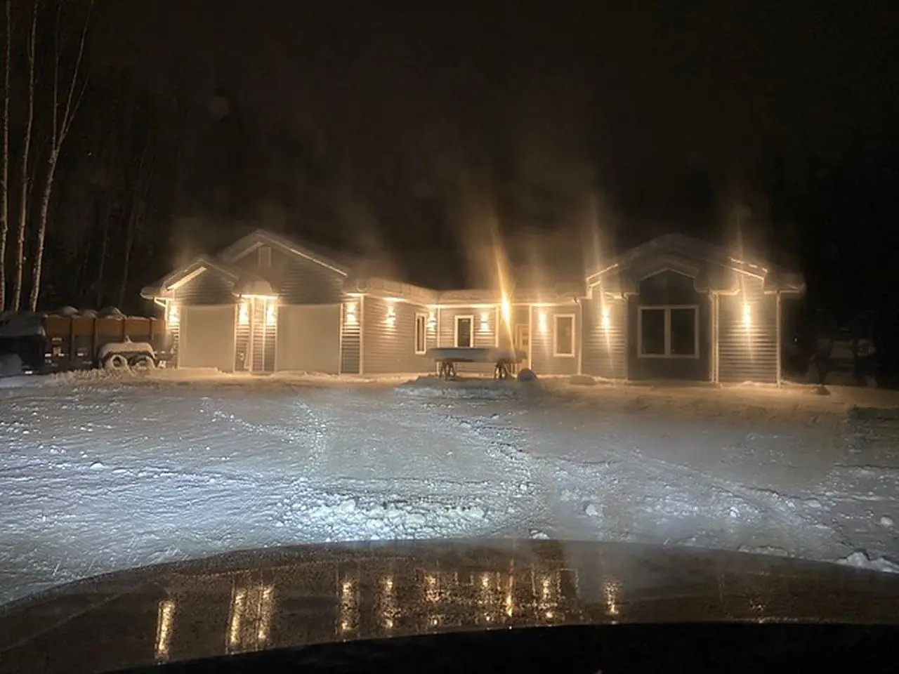

Contractor serving the Fort Wainwright areaClose to post.
Ready for Interior winters.
Fort Wainwright sits on the east side of Fairbanks, and many service members, civilians and contractors who work there live in homes off post in Fairbanks and North Pole. Edstrom Construction is a licensed Alaska general contractor based in North Pole. We restore homes after water, sewer, fire and mold damage and handle remodels and repairs for homeowners and landlords in the area.
Fort Wainwright
How we help households near Fort Wainwright
Clear scope, written pricing and one point of contact.
Local know-how
On post or off post?
If you live in on-post family housing, report damage to your housing maintenance office first. They control repairs in those homes. Our work around Fort Wainwright is mainly for privately owned homes and rentals off post in Fairbanks and North Pole, and for on-post projects only when the owner or agency hires us and access is arranged.
If you own a home here and are moving on PCS orders, we can handle repairs and updates before you rent or sell, and keep you updated with photos while you are away.
How it works
What to expect.
- 01
Call
Call (907) 488-0452. If water is still running and you can safely reach the shutoff, turn it off.
- 02
Assess
We look at the damage or the project and explain what needs to happen.
- 03
Document
For insurance losses, we photograph the damage and write a line-item estimate for your claim.
- 04
Repair
We dry, clean and rebuild, or complete the remodel, and walk the work with you.
Questions
Straight answers.
Do you work on Fort Wainwright itself?
On-post family housing repairs go through the housing maintenance office. We work on privately owned homes and rentals off post, and on post only when the owner or agency hires us and base access is arranged.
Can you manage repairs while I'm away on PCS orders?
Yes. We can work with you or your property manager, send photos as the work progresses and price any changes in writing first.
Do you bill insurance?
For covered losses we document the damage and bill your insurance company directly. Your insurer decides what the policy covers.
How far are you from Fort Wainwright?
Our shop is at 2135 Richardson Hwy in North Pole, a short drive from the Fort Wainwright gates and east Fairbanks.
Coverage and payment are decided by your policy and your insurance company. Edstrom Construction is a licensed general contractor, not a public adjuster, and an estimate is not a guarantee of final cost.
Service area
Fort Wainwright and the rest of the Fairbanks area.
Edstrom Construction Co., LLC works in Fairbanks, North Pole and Fort Wainwright from our shop at 2135 Richardson Hwy, North Pole, AK 99705. Call (907) 488-0452 or email office@edstromak.com.
- Fairbanks
- North Pole
- Fort Wainwright